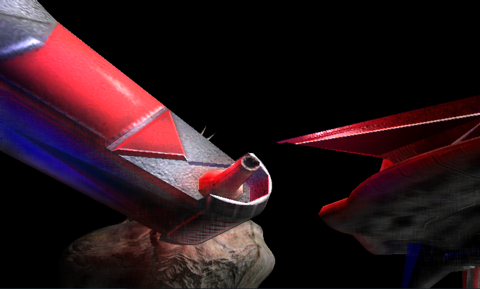
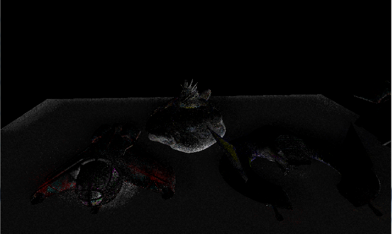
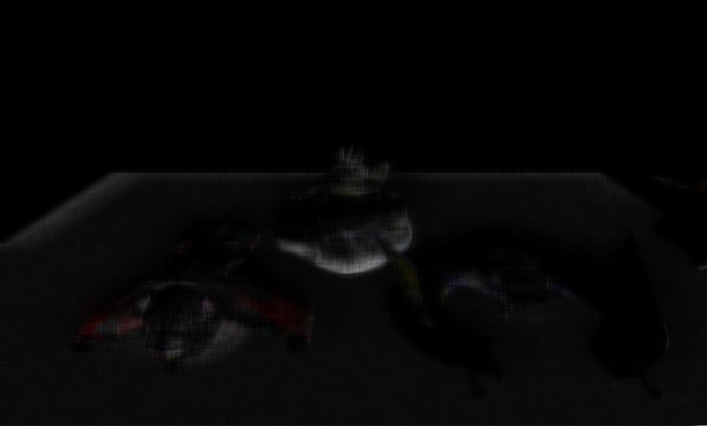
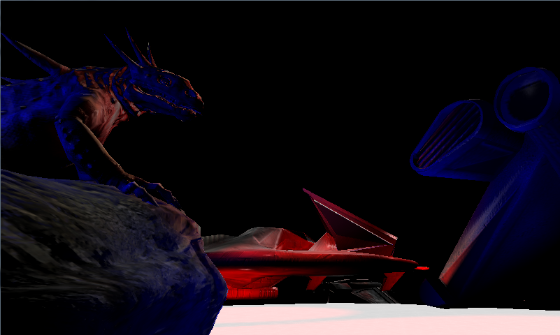
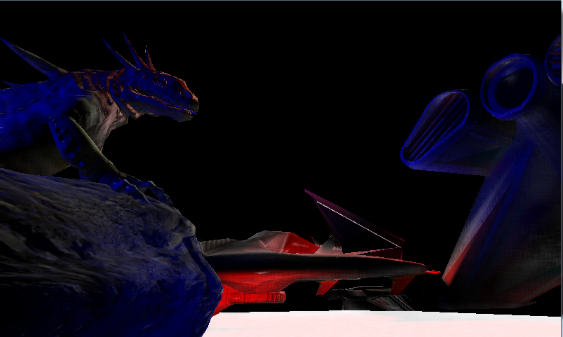
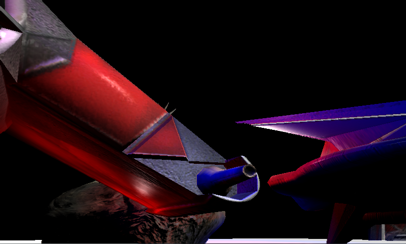

Simple SSIL implementation (XNA 4.0)

Why SSIL?
My previous post showed SSAO as a simple method to enhance your rendered videogame images and should be read before this post.
I first read about screen space indirect lighting here and the idea is not bad:
When we need to sample depth values from random directions in screen space for SSAO already, why don't we use the same technique for indirect lighting instead of only occlusion?
In addition to SSAO, we sample Albedo and lighting that the deferred rendering buffer already contains and use it as indirect lighting when occlusion is given.
This makes a local lighting model a bit non local.
Step 1: Changes to the SSAO shader
Actually the SSA shader contains nearly everything we need already.
In addition to color, depth, normal and noise, we need lighting information.
As mentioned earlier, using a deferred renderer enables this, because the lighting information can be present in a render target texutre already.
So the first step needs the following adjustments:
float3 light = tex2D(lightSampler,input.TexCoord).rgb;
Before the loop, we need to define a variable that accumulates the indirect lighting.
float3 resultRadiosity = 0;
In the loop, we need four additional lines. In addition to the frament coordinates, we need the lighting information and the albedo value of the occluding pixels.
The intensity of the indirect lighting is added as the dot product between surface normal and occlusion direction, similar to how a point light would be evaluated.
float3 occluderLight = tex2D(lightSampler,se.xy);
float3 occluderAlbedo = tex2D(colorSampler,se.xy).rgb;
float intensity = dot(occluderAlbedo,1);
float intensity = dot(occluderAlbedo,1);
resultRadiosity += step(falloff,depthDifference)*normDiff*(smoothstep(color,occluderAlbedo,intensity)) * occluderLight;
EDIT 2021: I removed a part of the original post which I think is misleading or even a bit wrong.
Step 2: Finish
Normally, we're done already.
But someone who also uses XNA 4.0 and therefore shader model 3.0 might know that the sample rate has to be very low, so that we don't blow up our instruction count.
Especially when SSAO and SSIL is done in a single shader, there's not much left.
For demo purpouses, I extracted the SSIL stuff and configured 13 samples.
Looks like this:
Since grain is noticeable in the final image, we need some blur. Looks a bit better already:
Maybe one can use normals and depth values a bit more cleverly to get better results, but for now I don't know how.
The comparison between the final result and without SSIL can be seen here. Especially on the stomach of the lizard, the difference is noticeable - normally, there wouldn't be any light at all. Or beneath the spaceship. Since the effect is quite strong, one may reduce the intensity a bit.
Here as well: the wings would not receive light at a lot of small places without SSIL. Some of the lighting is incorrect though.
|  |
| SSIL, no blur |
{kind=link}
|  |
| SSIL, with blur |
{kind=link}
Maybe one can use normals and depth values a bit more cleverly to get better results, but for now I don't know how.
The comparison between the final result and without SSIL can be seen here. Especially on the stomach of the lizard, the difference is noticeable - normally, there wouldn't be any light at all. Or beneath the spaceship. Since the effect is quite strong, one may reduce the intensity a bit.
|  |
| Image without SSIL |
{kind=link}
|  |
| Image with SSIL (nur Texturfarbe) |
{kind=link}
 |
| Image with SSIL (texture color and light color) |
 |
| Image with SSIL (texture color and light color, intensity 0.25) |
 |
| Image with SSIL (texture color and light color, intensity 0.25, occludee's incoming light is used) |
Here as well: the wings would not receive light at a lot of small places without SSIL. Some of the lighting is incorrect though.
| Image with SSIL (texture color and light color, occludee's incoming light is not used) |
{kind=link}
|  |
| Bild ohne SSIL |
{kind=link}
Final thoughts and limitations
I already mentioned the high instruction count, but in order to get acceptable results, one needs quite a few samples.
Additionally, only a single bounce of indirect light is evaluated. And that also only works when the radius for the rays is kept small.
Finally, this is a screen space effect and that means only visible things contribute to the lighting.